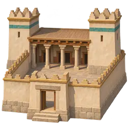
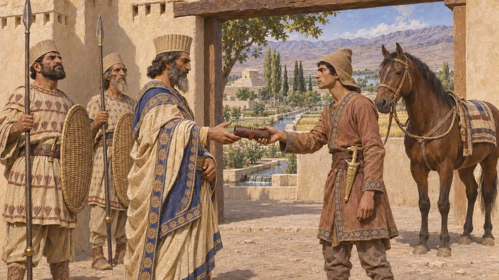
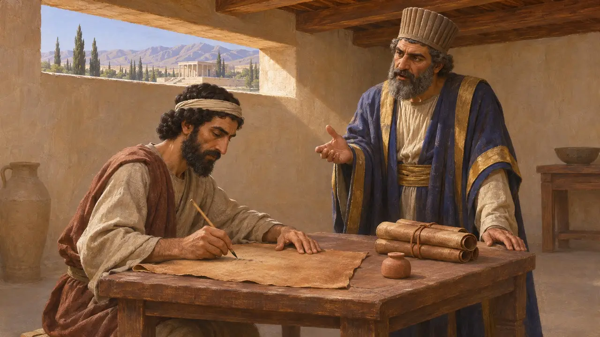
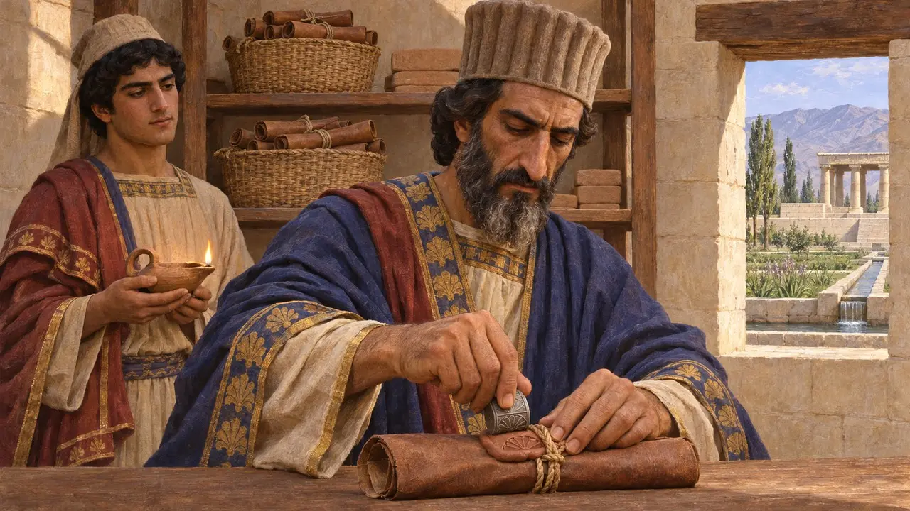
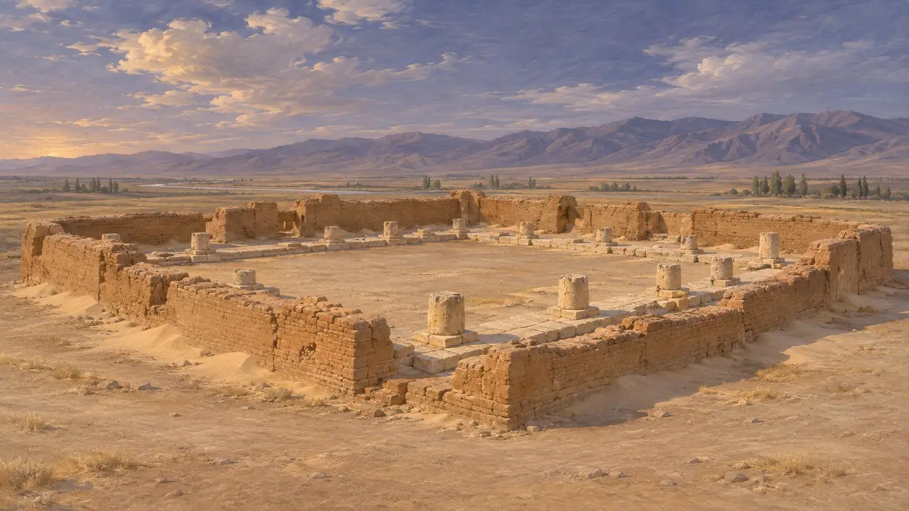

Governor's House
The seat of a province or a town's royal officer, about 550-330 BCE
ゲームでは： レベル1：建国者の墓
The Persian empire was held from governors' seats. The Old Persian word for a provincial governor, xšaçapāvan, which the Greeks turned into satrap, means protector of the realm. From his house a governor took in the province's dues, kept its stores and records, and answered to the King.
ゲームでは： The game gives each city one Governor's House, its heart. His retinue raises and works it, and his wagons and families are the town's first stores and first settlers. Newcomers report at its door, its scribes walk the first streets, and without it half the dues go astray. This is a simplification: towns held by lesser officers had no such building, and no source sets out these rules.

Protector of the realm
同時代の記録At Behistun Darius names his men by this title: Dadarshi, xšaçapāvan in Bactria, and Vivana, xšaçapāvan in Arachosia, both of whom fought rebels for him. Herodotus says Darius divided his empire into twenty governments, which the Persians call satrapies, and fixed what each should pay. Governors were held to the King by his messengers on the royal road and by the tribute they had to send.
DB 3.14, 3.55; Herodotus 3.89

Orders from the seat
同時代の記録Letters on leather in Aramaic show such men at work. Arshama, satrap of Egypt in the 5th century BCE, wrote to his officers about his estates and workers, and sent a steward with an order for his rations at each stop on the road. In Bactria, Akhvamazda wrote to a local governor, Bagavant, about a town's wall and the men who should build it, in letters of about 353-324 BCE.
B. Porten and A. Yardeni, TADAE A6; J. Naveh and S. Shaked, Aramaic Documents from Ancient Bactria, 2012

Sealed records
同時代の記録At Daskyleion near the Sea of Marmara, seat of the satraps of Hellespontine Phrygia, excavators found hundreds of clay sealings from an archive whose documents have perished. Many carry Persian court scenes in the seal designs. They show how much of a governor's rule passed through sealed orders and receipts, like the tablets of the Persepolis storehouses.
D. Kaptan, The Daskyleion Bullae, 2002; R. Hallock, Persepolis Fortification Tablets, 1969

What did it look like
係争中No governor's house has a plan everyone accepts, so the game's is interpretive: a walled court with porticoes, towers and a gatehouse. Its nearest model is Dahan-e Gholaman in Sistan, a Persian town founded in the 6th or early 5th century BCE, whose large buildings stood round central courts. One is read as administrative, but archaeologists still debate what its greatest court building was for.
U. Scerrato, East and West 16, 1966; Encyclopaedia Iranica, Dahan-e Ḡolāmān
出典
- DB
- Herodotus 3.89
- B. Porten and A. Yardeni, TADAE A6
- J. Naveh and S. Shaked, Aramaic Documents from Ancient Bactria, 2012
- D. Kaptan, The Daskyleion Bullae, 2002
- U. Scerrato, East and West 16, 1966
- Encyclopaedia Iranica, Dahan-e Ḡolāmān